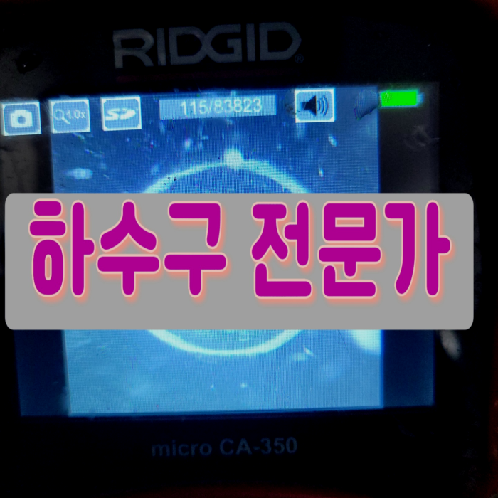
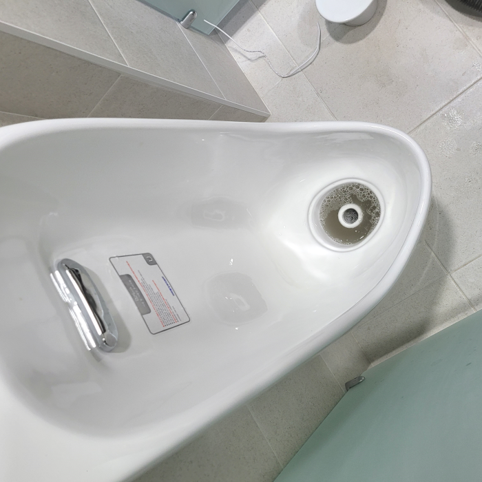
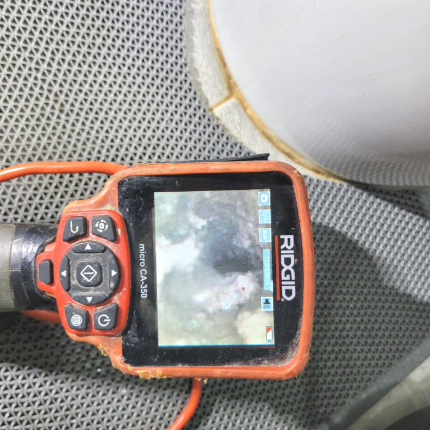
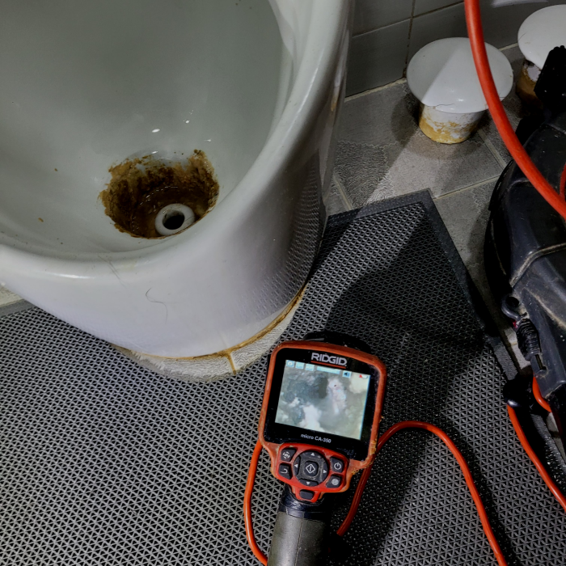
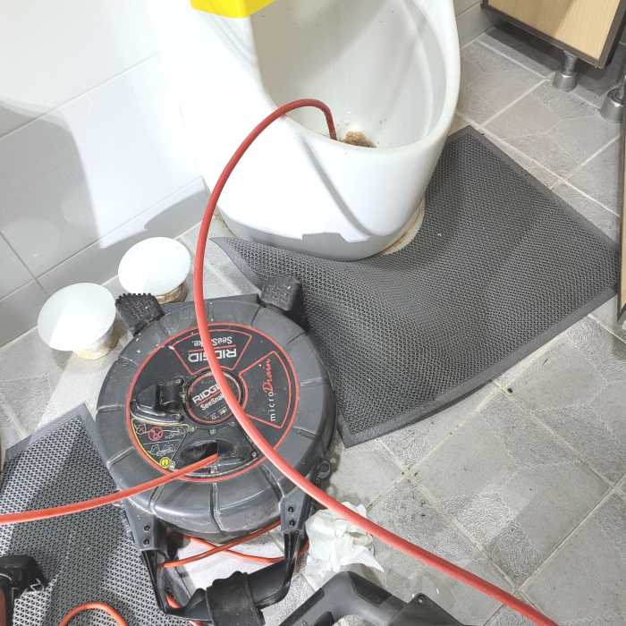
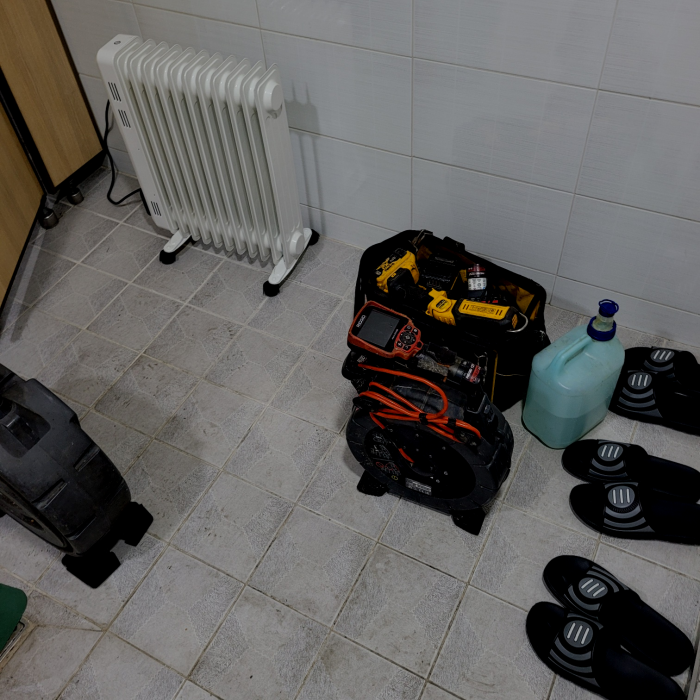
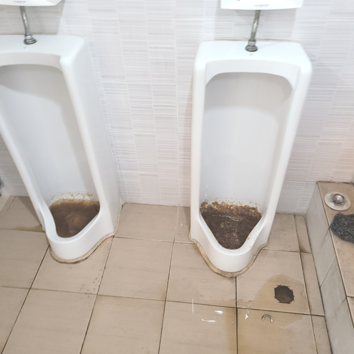

🏠 광교 소변기막힘 이의동 변기역류 요석제거 방법 뚫는곳 설비
서울 이의동 싱크대막힘 전문 시공 후기

📋 작업 개요
- 위치: 서울 이의동, 이의동, 서울
- 서비스 유형: 싱크대막힘, 변기막힘, 하수구막힘, 배관막힘, 누수수리, 역류해결, 뚫는업체, 배관청소
- 작업 일시: 2024. 3. 10. 20:54
- 업체명: 하수구수사대 (010-5615-2118)
🔍 문제 상황
안녕하십니까^^
설비전문업체 "하수구수사대"를 찾아주셔서 감사합니다^^
대부분 하루에도 수십 번씩 물을 사용할 수밖에 없는 주방 배수가 갑자기 물이 잘 내려가지 않거나 거꾸로 치솟는 등의 현상이 일어난다면 당황하게 되는데 이는 식당배수뿐만 아니라 일반 가정집에서도 자주 생기는 사태라고 할 수 있습니다.
저희는 배관막힌 곳이 있으면 어디든지 빠르고 신속하게 방문하여 확실하게 뚫어드리는 하수구 업체로 많은 문의를 받고 해결해 드리고 있습니다. 흔히 하수구가 막히게 되는 것은 일상에서 흔하게 일어나지 않기에 갑작스럽게 배수관막히게 되면 많이 당황스러울실 수밖에 없을것입니다.

🔎 원인 분석
💡 전문가 진단: 광교 소변기막힘 이의동 변기역류 요석제거 방법 뚫는곳 설비
광교 소변기막힘 이의동 변기역류 요석제거 방법 뚫는곳 설비
그렇기에 신속하게 배관업체에 문의하시는 것이 좋으며 과도하게 기다란 물체를 집어넣는 행위들은 배관이 금 가거나 누수 등의 다른 사고로 번지는 경우도 생깁니다. 그렇기에 깔끔한 마무리를 위해서는 혼자 해결하시는 것보다는 배관기술자의 시공을 받으시길 바랍니다.
하수관 안쪽에 이물질이 적을때에는 셀프로 처리를해도 훼손없이 눈으로볼수있는 곳까지는 쉽게 제거할수있어요. 반면에사태가 엄중할경우엔 자가로진행하는처치로는 나아지기 어렵죠. 구두주걱같은 기다란것들을 넣게된다면 하수관안쪽으로 흘려가서 잔해물질등과 뒤섞여서 더욱심각한문제로 번질수있죠.
배수관배관 안에는 아주 많은 양의 기름 덩어리들이 보이는 상황이었습니다. 배수관배관의 내부는 기름 덩어리들이 굳으면서 단단한 고착 물질로 대부분 막혀있는 상황이었는데요. 이물질들이 지나가면서 배출이 되기는 쉽지 않을 거라는 생각이 들었습니다.

🔧 작업 과정
하지만 실력이 아무리 좋다고 해도 장비가 없다면 또한 무슨 소용이 있을까 싶습니다. 앞서 말씀드렸듯이 사람의 육안으로 보는 데에는 한계가 분명히 존재하기 때문에 배수관내시경 장비가 없다면 정확한 진단이 어렵습니다.
저희는 오랜 경력과 노하우를 통해서 전문 장비를 가지고 작업을 해결하고 있는 곳인 만큼 배출구 막힘이 발생을 하게 되면 고객과의 빠른 상담을 한 후에 방문을 진행해 드리고 있습니다. 우리가 무심코 매일 사용을 하고 있는 배출구배관은 잠시만 막히게 되더라도 아주 불편한 상황이 발생하게 될 수밖에 없는데요.
한 번만의 작업으로 인해서 몇 개월혹은 몇 년 이상 하수구가 막히는 일이 없도록 관리할 수 있기 때문에 많은 분들이 배수구에 정기적인 작업으로 쾌적한 유지를 하고있습니다.
방문하여 현장을 살펴보니 외관상으로는 문제가 되보이는 게 없었지만 내시경 등을 통해 배관의 내부를 살펴보았을 때 심각한 상황이었습니다.평소에는 괜찮았던 배관 갑자기 막히거나 역류하게 된다면 누구나 당황스러우실겁니다.
퇴수전문업체를 찾아서 간단하게 수리할수있었던 문제들도 이때문에 심화되기만해요.이러하기에 금액절약을위해 무리하면서 시도해보시는것은 일단 멈춰주시는게좋아요.
일단 건물관리인분께 이런 부분으로 인해 막힘이 발생된 것 같으니 함께 확인해 보기로 하였고, 배수배관 안쪽에 이물질들을 제거하기 위하여 석션기를 배관으로 넣어 작동을 진행했습니다.
배수구 배관 속에서 나오는 이물질의 양과 종류는 현장마다 상황마다 다르며, 그래서 사용하는 배수구장비도 작업하는 순서도 다를 수 있습니다. 서울 전 지역 하수구 배관 청소라면 어디든 달려가서 무리하지 않게 문제를 해결해드리고 있으니 언제든 연락 주시기 바랍니다.


✅ 작업 완료
저희는 수도권 전 지역을 돌며 작업을 진행하고 있습니다. 화장실 배수구 막힘 현장뿐만 아니라 저희의 도움이 필요한 곳이라면 어디든지 달려가고 있기 때문에 배수구문제가 발생하였다면 고민하지 마시고 연락 주세요.
#하수구막힘 #하수구뚫음 #하수구역류 #씽크대막힘 #싱크대역류 #오수관막힘 #하수구청소 #욕실하수구막힘 #변기막힘 #하수구뚫는비용 #싱크대수리 #화장실막힘




⚠️ 베란다 누수 및 방수 관리 방법
- ✅ 비가 많이 올 때 창틀 주변이나 아래층 천장에 얼룩이 생기는지 정기적으로 확인해 보세요.
- ✅ 우수관 주변 실리콘 마감이 들뜨거나 깨진 틈새가 있는지 손상 여부를 수시로 체크하세요.
- ✅ 베란다 바닥 타일의 줄눈(메지)이 소실되면 그 틈으로 물이 침투하여 누수가 유발됩니다.
- ✅ 누수 의심 증상 발견 시 방치하면 아래층 손실이 커지므로 즉시 전문가의 진단을 받으십시오.
💡 핵심 정리
- 확실한 장비 작업(내시경 점검 및 샤프트 스케일링)으로 원인을 뿌리 뽑습니다.
- 작업 후 1년 이내에 동일한 부위 재발 시 100% 무상 A/S 서비스를 보장합니다.
- 서울 · 경기 · 인천 전 지역에 24시간 언제든 긴급 출동할 수 있도록 항시 대기 중입니다.
❓ 자주 묻는 질문 (FAQ)
🚨 서울 이의동 싱크대막힘 문제로 고민이신가요?
정확한 원인 진단과 확실한 시공으로 재발 없는 해결을 약속드립니다.
24시간 긴급 출동 | 서울 · 경기 · 인천 전지역 | 1년 내 재발 시 무상 A/S